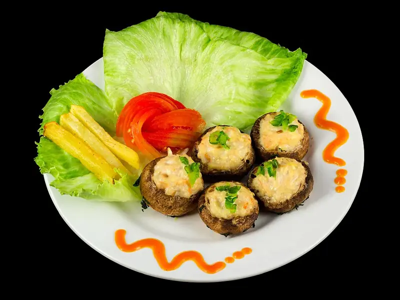

Фото: Crisco 1492, CC BY-SA 4.0

Фаршированные шампиньоны в духовке
Шляпки шампиньонов с начинкой из ножек, лука и сыра
40 мин4 порц.192 ккал на порциюБ 13 · Ж 14 · У 5Русская кухня
Продукты на 4 порц.
- Шампиньоны500 г
- Лук репчатый1 шт
- Чеснок1 зуб.
- Сыр твёрдый100 г
- Сметана 20%2 ст. л.
- Сливочное масло20 г
- Укроппо вкусу
- Соль0,5 ч. л.
- Перец чёрный молотыйпо вкусу
Как готовить
- Выберите крупные шампиньоны одного размера. Аккуратно выкрутите ножки и чайной ложкой немного углубите шляпки.
- Мелко нарежьте ножки, лук и чеснок.
- Обжарьте лук на сливочном масле на среднем огне 3 минуты, добавьте ножки и жарьте 7 минут, пока сок не выпарится. Посолите и поперчите.
- Остудите начинку 5 минут, смешайте со сметаной, рубленым укропом и половиной тёртого сыра.
- Наполните шляпки начинкой горкой, выложите на противень с пергаментом, сверху посыпьте оставшимся сыром.
- Запекайте при 180 °C (средний жар) 15-20 минут, пока сыр не расплавится и не подрумянится, а шляпки не станут мягкими.
Совет. Грибы не мойте под струёй, а протрите влажной салфеткой, иначе шляпки наберут воды и начинка поплывёт. Подавайте горячими, остывшие теряют сочность.